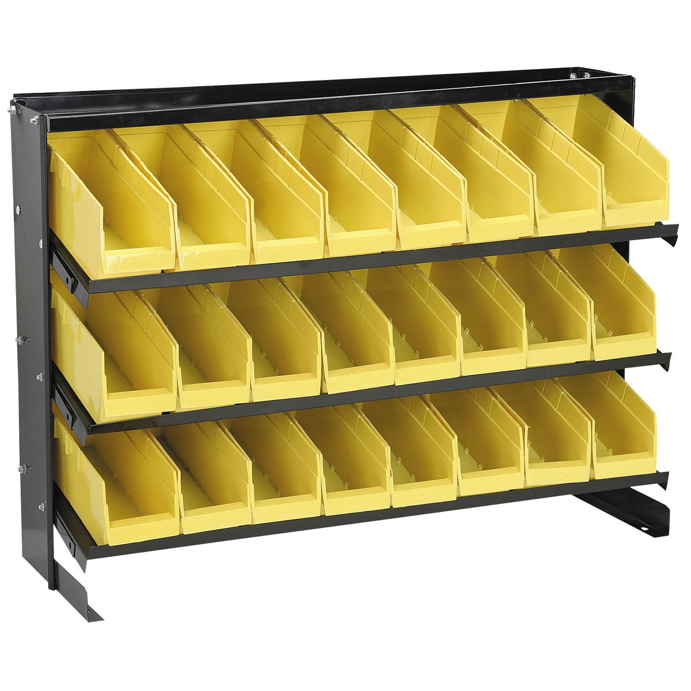

Really interesting article and discussion on why the SEC should or should not have banned sub-penny pricing. Still don't quite get the limit order perspective.
Particularly plastic and headlights. Wet sanding with even 7000 grit sandpaper isn't enough for a glossy finish, says 3m.
YouTube Link! https://www.youtube.com/watch?v=Qb8XF4RLbhE
Going to try some blue polishing compound from Harbor Freight.
Definition 1: Profit ultimately represents the amount that a customer knowingly provides a company for the value they have received above that company’s costs.
Definition 2: Profit ultimately represents the amount that a company receives above its cost structure to the disadvantage of its customers without their knowledge. https://www.greatgame.com/blog/profit-has-become-a-bad-word
There are lots of expenses that go into keeping a business running. Salaries (even for the owner), building maintenance, supplies, saving for a rainy day, etc.
However, after all of that, assuming a business knows their exact costs should they try to maximize their profit? Pros:
Cons:
Newman's Own, social enterprise, non-profit all operate this way.
It's here somewhere. USB frequency spectrum analyzer. Would like to try it out and see if the led strips and stuff emit any FCC-annoying radiation. https://transition.fcc.gov/Bureaus/Engineering_Technology/Documents/bulletins/oet63/oet63rev.pdf
I think since the helmet project is exclusively on a vehicle, we're ok. However, should still look into it so it's not annoying.
More information from Sparkfun: https://www.sparkfun.com/tutorials/398
One option is fluorescent lighting, similar to shop light. About same price? but harder to replace bulbs / sections of bulb.
Just buy an LED strip and in line outlet switches. Amazon List PDF: led_lighting.pdf
Upright full 4×8 machine. Pretty cool, and cheap. https://makermade.com/product/maslow-cnc-ready-to-ship/
Weird article that confuses total deaths per capita with rate of dying?! Linked by Greater Fool surprisingly. https://medium.com/@premgurc19/coronavirus-lockdowns-why-we-must-end-this-failed-policy-7af773428743
A better article: https://www.worldometers.info/coronavirus/coronavirus-death-rate/
Might want to try repairing it. Or just buy a new one for $40?
https://superuser.com/questions/1007968/what-lubricants-can-be-safely-added-to-a-laptop-fan
I think I want some parts bins for frequently accessed stuff for the business and make use of vertical space on top of bookshelf and not use a giant laundry basket :) Needs to hold:
I'm moving towards the yellow tall bins since they are deep and tall and thin and more easily accessible. Only downside is that they don't stack.
 https://www.harborfreight.com/24-bin-bench-top-parts-rack-69572.html
Bought it. It's yuuuge, but great so far!
Used tech stuff. A nice site! https://www.backmarket.com/
Selling small things on ebay is fine, but packing large items sucks.
Want to try to avoid it by going onto Craigslist if at all possible.
Really only need it for a few occasional days in the summer. Window AC units is most efficient, since the condenser motor is outside. However, can run a two host portable air conditioner inside and can additional cover some holes…
When wage gap inequality is presented, unfortunately not explicitly corrected for years of experience.
AI system bias. I feel like I can just do a quick math formula with bayes' rule and see the difference between bad bias and good, what people are talking about / trying to do.
https://store.eurtonelectric.com/powertoolswitches.aspx
But might also work to get a variable speed foot pedal. Depends on device, etc. Might need to downgrade to a momentary switch pedal instead.
Harbor Freight makes something. Might need to add a bigger heat sink for long-term operation.
* https://www.harborfreight.com/router-speed-control-43060.html
* https://www.instructables.com/id/Harbor-Freight-Router-Speed-Control-Mod/
Harbor Freight one sucks apparently! https://youtu.be/ASywVBU0ZwE?t=636
Webcam: https://www.cohovideofeed.com/mjpg/khio31/video.mjpg?user=flykhio&pw=apple32
Weather station: https://www.pwsweather.com/station/pws/KHIONET
Somehow one item was returned, but another not?! Gave to UPS store, so don't have clear receipt. Urgh.
Seems like it's a recurring issue, even with a UPS tracking code! Somehow the customer is charged twice for this?! https://webcache.googleusercontent.com/search?q=cache:Li_SvpbCn94J:https://sellercentral.amazon.com/forums/t/customer-return-lost-in-transit-on-the-way-back-to-us-used-amazon-generated-ups-label/544161+&cd=11&hl=en&ct=clnk&gl=us
Amazon just said over support chat (our error, don't worry about it..)?! Weird.
Can search Cornell Ornithology spectrograms online. https://search.macaulaylibrary.org/catalog?mr=M6TO7&behaviors=s®ion=Skamania,%20Washington,%20United%20States%20(US)®ionCode=US-WA-059
Would like to check out Moffett or Elowah Falls. They looked cool from the Washington side, not sure if they are visible from the highway on the Oregon side
Like Hooded Warbler (http://northwestbirding.com/BirdSongs/Recordings/hooded_warbler_skamania_county_07-06-13.mp3) and Hermit Thrush (), but those weren't it.
Nashville warbler is cool too.
Swainson's Thrush!
Very interesting story of Maxis Business games. SimRefinery is one: https://obscuritory.com/sim/simrefinery-recovered/
But there are others (https://obscuritory.com/sim/when-simcity-got-serious/), including this gem.
YouTube Link! https://www.youtube.com/watch?v=mujgvUsO7w8
Called someone already for sealcoat.
Maybe call Leggett Asphalt as they had good Angie's List review?
Maybe contact Land Use and Transportation department? https://www.co.washington.or.us/LUT/Divisions/Engineering/ConsultantResources/road-design-standards.cfm
The area is 6K square feet
| Name | Price | Looks like | Intent |
|---|---|---|---|
| Sealcoat | $.14 - $.35 / sqft | “paint” | Low speeds / infrequent wear |
| Slurry seal | $.47 - $.78 / sqft | Goop + large particles | High speeds / wear |
| Resurface / Milling | $1-3 / sqft | Grind off top layer and redo |
1900 with seal, with crack fill. Patch for section 1200.
A good chunk of the road has moss on it. We can do the prep work for this ourselves of cleaning it off!
If just sealcoating is needed, it is potentially something we can do ourselves. Save on labor costs. However, I doubt that is all that is needed.
How much will sealcoating extend the life of the asphalt?
ORPIN search has some companies that were used: http://orpin.oregon.gov/open.dll/open?sessionID=1062150558
Laptop keyboard has it, but is hidden in setup. Would like to use earbuds button, but seems like laptop doesn't respond to it / have full TRRS connector?
AutoHotKey doesn't seem to have support. has support: https://autohotkey.com/board/topic/109687-can-you-please-make-this-script-for-me-muteunmute-mic-with-f7, try using the SoundSet api first: https://www.autohotkey.com/docs/commands/SoundSet.htm
Assembling helmet kit. Gotta finish that…
Selling stuff on Craiglist. Mowing lawn.
Hard on transmission due to inefficiency of torque converter at low RPMs (generates lots of heat). Great explanation: https://mechanics.stackexchange.com/questions/53332/how-to-prevent-automatic-transmission-damage-when-towing-a-heavy-load-without-th
Myung Soo Kim
Brother is Kyung Soo Kim
Singles bar sketch that I like: https://www.youtube.com/watch?v=Ow28FZldjAQ. Very … the way I can think.
Are muscles efficient springs? How does that work??
https://www.eurekalert.org/pub_releases/2018-04/aaft-wtb042318.php
Thermopile provides power for opening and closing the valve. Runs on difference of heat from the pilot light.
Their brand is selkirk.
Need to hold in the pilot light knob for the pilot to light?
Parents air conditioner broke. Fan was spinning very slowly and got very hot. Initially suspected bad capacitor (it did look quite tired), but that didn't help. Buying a new motor to replace the old one: (frame
Fan blade:
Great movie. Really eye-opening to a perspective on India you don't get to see much.
A lot of it is true sadly too: https://www.dailymail.co.uk/news/article-1127056/The-real-Slumdog-Millionaires-Behind-cinema-fantasy-mafia-gangs-deliberately-crippling-children-profit.html
Really fun, especially for kids. Great opportunity for networking and learning from experts about what they do.
Tinker Camp, kids were quickly making cool stuff with just cardboard, scissors, and tape and loving it. They have adult sessions as well. 2nd wednesday of the month, 6-9 pm, doing hands on tenacious stuff around a story. Would be worth checking out once!
Oregon Amateur radio society, wrote down the stuff elsewhere.
PDX Hackerspace, they even have a building! $40 a month, no problem if unemployed. 24/7 access.
Frequently used doorknob (garage door) has stopped slamming shut. You can tell your manufacturer by looking at the latch. Schlage has no questions asked lifetime warranty on mechanical parts: https://diy.stackexchange.com/a/11948
Georgian Aged Bronze Keyed Entry Door Knob: https://www.homedepot.com/p/Schlage-Georgian-Aged-Bronze-Keyed-Entry-Door-Knob-F51A-GEO-716/204834188
CAS 1705162
F51 (new keyed latch)
CAS 1749141 is new number
Some things that have helped me fix things and keep them working:
Columbia employee store, can get access through Beneplace. However, don't feel confident the quality is 2X better than Amazon. But might want to check it out
Race condition for adding new participants to thread if someone else is sending an email at the same time with old set of participants. Also, why send an email to everyone to just subscribe one person? No real update there.
~$35 for mechanical one on amazon looks good. Free returns. Let's try it out! But check with M&D. Need to get it flat too. Also cold only is probably okay because the water is generally at sorta room temperature in the pipes most of the time.
Can turn down the strength by using the twist on toilet input (just takes longer to fill), or buy a t-joint that has a shut off valve built in.
h:nn “WW”Wi.wi\n yyyy-mm-dd
Can fire by Banks. Just before Timber Junction on 26 off to the right there'll be a yellow gate.
Another thing is a rest stop.
Or just look for clear cuts on Google Maps
Cheap igloo cooler isn't as tough as the Yeti, but it is a lot lighter. And can be easily spray foam filled with insulation and adding another inch on the inside. https://www.youtube.com/watch?v=Tjh6RDTgMuQ
Try reading and doing the bates method. Good book is apparently at the beaverton library…Relearning to See. Thomas Quackenbush.
Intel out of network optical coverage: 6_medical_plans.pdf
From http://www.myopiaprevention.org/treatment_discussion.html:
What slows myopia the most? (with availability)
Atropine (60%-87 ??%) - many doctors are not aware of the research on low-dose atropine and reject atropine based on the side effects of the normally available 1% strength.
Ortho-K (orthokeratology) (40% to ??) - OrthoKDoctors.com
Soft Bifocal Contact Lenses (40% to 87%?) - nearly all doctors
Outdoor Time over 2 hours/day (50%??) - plan for it
Call up optometrist, see if they know about and measure:
https://www.vsp.com/claims/submit-oon-claim. Results are here: https://www.vsp.com/benefits/my-benefits?tab=benefitHistory
$130 for elective contacts every year.
Something else for glasses.
Trying out Zenni optical.
Bought with GlassesUSA this time. $60 all in per box.
From the same company, they double the price ($30) when renewing contacts, but when you google for the same contacts they compete like crazy but then throw in a 50% markup “processing fee” in your cart! Interesting. And it's really hard to price match with them. Weird.
Free online vision test? Through OptiContacts:
{kind=link}
{kind=link}
{kind=link}
{kind=link}
{kind=link}
{kind=link}
{kind=link}
{kind=link}
{kind=link}
{kind=link}
{kind=link}